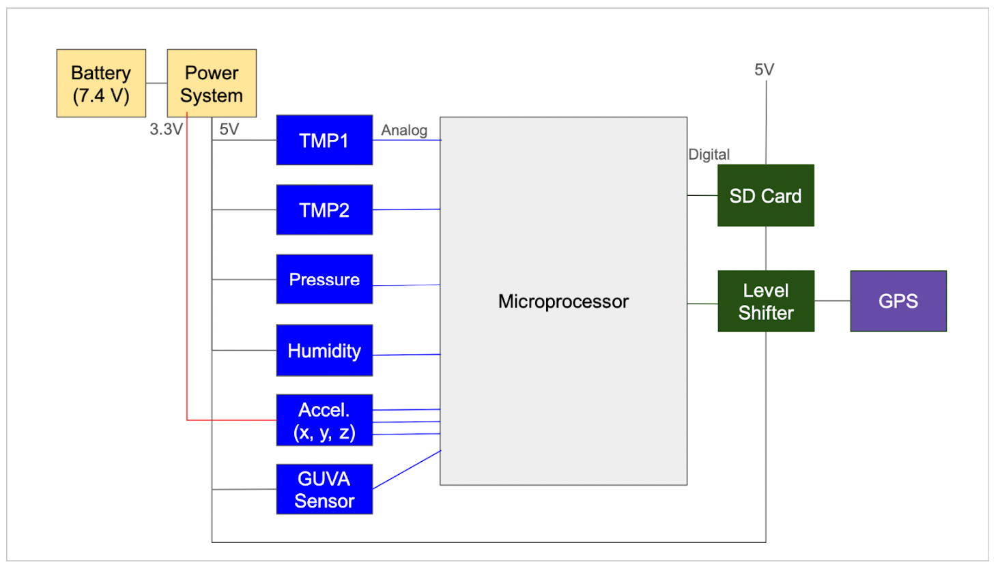
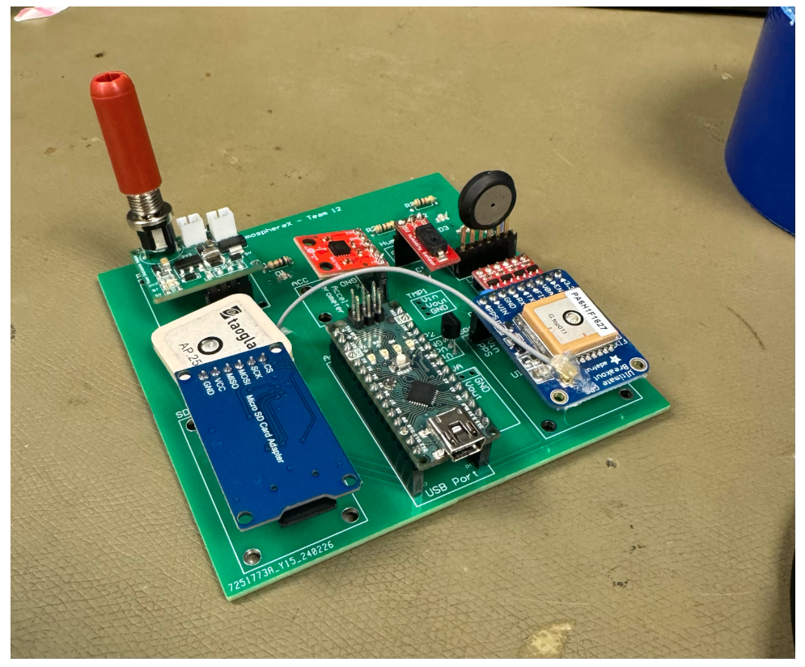
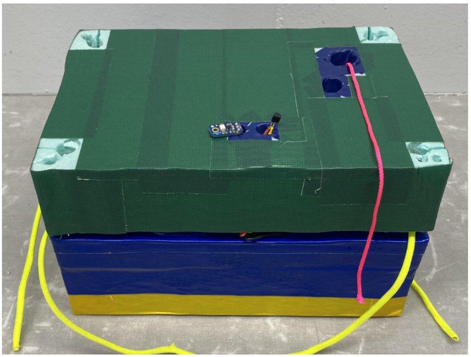
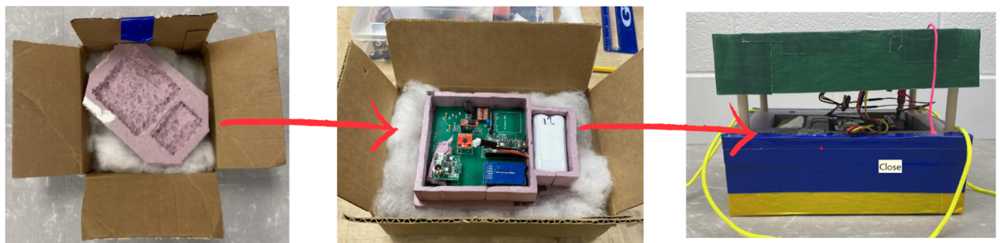
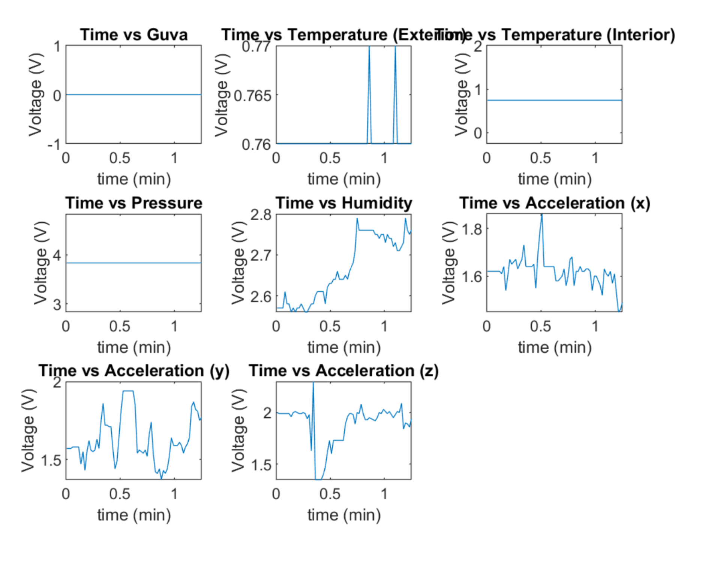

Sensor Payload for Atmospheric Measurements
This project focused on designing and launching a high-altitude weather balloon payload to characterize how ultraviolet (UV) intensity changes with altitude. Our team designed a custom PCB integrating pressure, humidity, acceleration, temperature (internal and external), UV (GUVA), and GPS sensors. Data was logged to an SD card using an Arduino Nano.
The payload successfully reached nearly 100,000 feet and collected flight data showing a near-linear increase in UV intensity with altitude. While we could not draw definitive conclusions about the health of Michigan's ozone layer, the system successfully validated our hypothesis regarding UV behavior at increasing altitudes.
System-Level Block Diagram

Final PCB

Final Payload Exterior

Developmental Timeline
Mission Definition
Defined the scientific objective: measure UV intensity versus altitude to investigate its relationship with atmospheric behavior and the ozone layer. Established system constraints including size (4x4 in PCB) and mass under 1 lb.
Sensor Selection & System Architecture
Integrated pressure, humidity, accelerometer, dual temperature sensors, GUVA UV sensor, GPS, and SD logging. Designed regulated 5V and 3.3V rails to support mixed-voltage components.
PCB Design & Power Distribution
Designed a compact custom PCB in Altium meeting dimensional constraints. Implemented separate power regulation stages and validated trace widths, mounting holes, and sensor placement for structural reliability.
Budget Verification
Completed mass, power, and data budgets. Achieved: 18% mass margin, 90% power margin, and >75,000% data margin relative to SD card capacity.
Structural Iterations & Cold Testing
Iterated through multiple foam-based “sandwich style” enclosure designs. A failed 2-hour cold chamber test revealed battery thermal limitations, leading to increased insulation and weatherproofing.

Pre-Flight Validation
Conducted stair drop tests, elevator pressure validation, GPS tracking verification, GUVA calibration, and cold chamber re-tests. Confirmed readiness prior to launch.

Launch & Data Analysis
Payload reached ~100,000 ft. Flight data showed expected decreases in pressure and temperature with altitude, and a near-linear increase in UV intensity above ~20,000 ft. Structural design successfully protected electronics throughout flight.